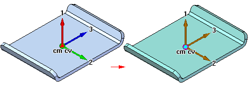

Physical properties of parts and assemblies
You can calculate the following physical properties of parts and assemblies:
-
Volume
-
Mass
-
Center of volume
-
Center of mass
-
Surface area
-
Orientation of the principal axis
-
Mass moments of inertia
-
Radii of gyration
You can calculate surface area only for parts.
Center of mass, center of volume, mass moment of inertia, and principal axis coordinates are output with respect to the global coordinate system. Principal moments of inertia and radii of gyration are output with respect to the principal axes.
Physical property symbols
The Physical Properties command places symbols on the part or assembly to show the center of mass location, center of volume location, and principal axis orientation. You can display and hide the symbols individually, or display them all at once using the Physical Properties dialog box.

Calculating and storing physical properties
When you calculate physical properties for a part, the Physical Properties command calculates and stores the properties for the individual part. In the Assembly environment, the Physical Properties command calculates and stores the properties for the entire assembly. If the mass of individual assembly components are not available, a user-defined value can be set for engineering calculations.
If you want to calculate the properties for a portion of an assembly, you can select the individual parts in the assembly before selecting the command. The software places property symbols indicating the center of mass, center of volume, and principal directions for the selection set.
Physical properties for a selection set are not stored with the assembly. When you close the Physical Properties dialog box, the property data for the entire assembly is restored. To store physical properties of a selection set, click the Save As button before dismissing the Physical Properties dialog box.
Using coordinate systems
You can calculate physical properties relative to a user-defined coordinate system. A list of all user-defined coordinate systems plus an entry for the Model Space coordinate system, which is the default, is available on the Physical Properties dialog box. Calculating physical properties relative to a user-defined coordinate system will affect all properties other than Mass, Volume, and Surface Area.
Defining the density
Before calculating the physical properties for a part or the weld beads in a weldment assembly you must specify the density of the part or weld bead.
For a part, you can define the density on the Material tab of the Solid Edge Material Table dialog box, the Physical Properties dialog box, or the Variable Table. The Change button on the Physical Properties dialog box displays the Solid Edge Material Table dialog box so you can edit the material type and/or the density for the part.
For weldment assemblies, you can define the weld bead material density using the Weldment Assembly command, or the Variable Table.
When you have defined the density, click the Update button. You must provide a positive density value. If you do not specify a density, Solid Edge uses a density of zero and produces the error message: Density Must Be A Positive Numeric Value.
You can create material-specific template files by defining the material and density in the files you use as templates.
In the Assembly environment, the software checks each part in the assembly to determine if a density was defined for each part in the Part or Sheet Metal environments. If you have not specified a density for a particular part, you can supply a density value for calculating the part's physical properties.
When you save an assembly, part, or sheet metal document, you can also save the density information with the document. The information can be used later to update the physical properties.
User-defined properties
You can override physical properties calculated by the software by setting the User Defined Properties option on the Physical Properties dialog box. For example, if you know the mass for a particular part, you can supply the value, and it will be treated as computed data. However, if you then update values, the software will recalculate and override any user-defined values. The physical properties will not update using a mix of user-defined and system calculated properties.
The Quantity override mass feature allows you to control the value that is stored and returned for the mass of an assembly. When you activate the Use as Assembly Mass option, the Mass value of the assembly is set equal to the value computed using component quantity overrides. Using this value reports the mass as function of the count of components in the assembly, it does not affect geometric values such as assembly center of mass position. You only need to turn this option on for assemblies that have quantity overrides. You do not need to turn this on for all assemblies. When you deactivate this option, the value of the geometric mass is returned as in releases prior to ST8. The deactivated state is the default setting.
Density, Mass, and Volume cannot be zero.
Failed parts or assemblies
Physical properties cannot be calculated for parts with features that have not recalculated correctly. In the Part and Sheet Metal environments, you can use the Error Assistant dialog box to determine which parts have features that have not recalculated correctly and why.
Updating physical properties
If you change a part or assembly so that its physical properties change, the colors of the physical properties symbols change to show that the last calculated physical properties are out-of-date and should be updated. For example, if you change the material density for a part, the physical properties symbols can go out of date.

A part can also become out-of-date if you add, delete, or modify a feature. An assembly can become out-of-date if you add or delete a part from the assembly, or if you add or remove assembly features.
You can set or clear the Update on file save option to specify whether the physical properties are automatically updated when you save the document. You can also update the physical properties of a part or assembly by selecting the Update button on the Physical Properties dialog box. A message is displayed at the bottom of the dialog box that indicates whether the physical properties are up-to-date or out-of-date.
Solid Edge Assembly templates are delivered with update physical properties turned off. As a result, assemblies marked as driven references are not automatically updated. Enable the Update on file save option when you use the Multi-CAD capability in the Teamcenter-managed environment.
Physical properties manager
In the Assembly environment, you can use the Physical Properties Manager command to view, edit, and manage the physical properties for all the parts in the active assembly. This can be useful because you can view and edit the physical properties for all the parts at once, rather opening each part document to view and edit its physical properties.
Mapping physical properties for synchronization with Teamcenter
By using mapping definition files, physical properties such as density, mass, and volume can be stored in the Teamcenter and displayed and modified in both Solid Edge and Teamcenter. This synchronization allows an attribute in one application to be updated automatically when a modification is made to the corresponding attribute in another application. Refer to the Teamcenter Integration for Solid Edge (SEEC) Guide for Users and Administrators, for attribute mapping syntax and examples.
How do I
Calculate the physical properties for an assemblyCalculate the physical properties for a part
Modify the physical properties for the parts in an assembly
Look up more details
Physical Properties commandPhysical Properties Manager dialog box
Physical Properties Manager command
Physical Properties dialog box
Global Tab
Principal Tab